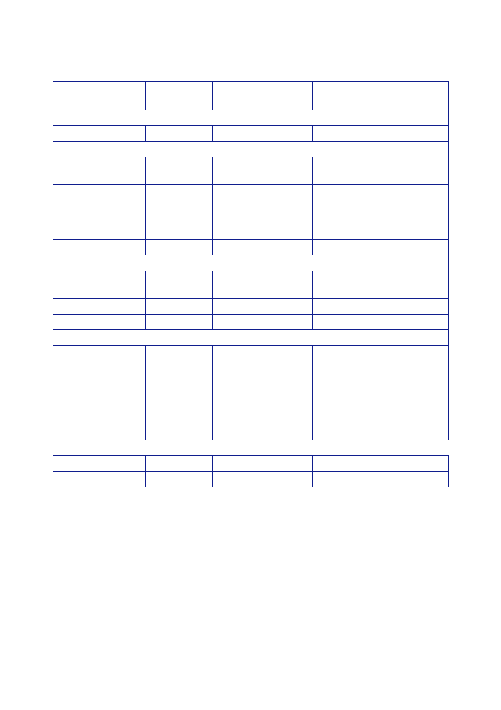

The Report
of the Iraq Inquiry
2002/ 2003/
2004/ 2005/ 2006/ 2007/ 2008/ 2009/
03 04 05 06
07 08 09 10
NACMO (inc.
UORs)
847
1,311 940
963 959 1,458 1,381 342
Humanitarian
and development assistance444
Humanitarian
assistance
19
110
21
5
10 20
16
8
Development
assistance
99
27
82 39 20 17
13
Imputed
share of
multilateral
aid
Sub‑total
11
11
6
14
9
14
8
19 220 59
93 63 49 47 29
Diplomatic
representation and support for the CPA445
Diplomatic
representation
Sub‑total
10
45
64 60
38
20
30
29
0 39 45 64
60 38 20 30
Interdepartmental
Conflict Pools and peacekeeping447
GCPP
5
16 15 20
16
Stabilisation
Aid Fund
19
Conflict
Pool
11
Peacekeeping
Sub‑total
11 17
15 6 7
1
5 27 32 35
22 26 12
Total
866 1,575
1,041 1,147 1,114 1,567 1,474 413
Total
8,201
209
297
73
579
267
29
296
72
19
11
57
159
9,235
Total inc.
debt relief
337
337
280
866 1,575
1,378 1,484 1,114 1,567 1,754
954
413
10,189
443
Statement
Macpherson, 15 January 2010; Letter Cabinet Office [junior
official] to Aldred, 1 July 2011,
‘Iraq
Inquiry: Request for Further Information on Funding’; Letter
Cabinet Office [junior official] to Aldred,
13
September 2011, ‘Iraq Inquiry: Request for Further Information on
Funding’.
444
Letter
Cabinet Office [junior official] to Aldred, 1 July 2011, ‘Iraq
Inquiry: Request for Further Information
on
Funding’.
445
Letter
Cabinet Office [junior official] to Iraq Inquiry [junior official],
1 December 2011, ‘Iraq Inquiry:
Funding’.
446
The FCO
received £29.2m from the Reserve in 2003/04 to provide security,
hardened accommodation
and life
support to UK secondees to the Coalition Provisional Authority
(CPA). DFID provided an
additional
£28m to support secondees to the CPA (that amount is included in
the figures for development
assistance).
447
Letter
Cabinet Office [junior official] to Iraq Inquiry [junior official],
1 December 2011, ‘Iraq Inquiry:
Funding’.
448
Letter
Cabinet Office [junior official] to Aldred, 13 September 2011,
‘Iraq Inquiry: Request for Further
Information
on Funding’.
564